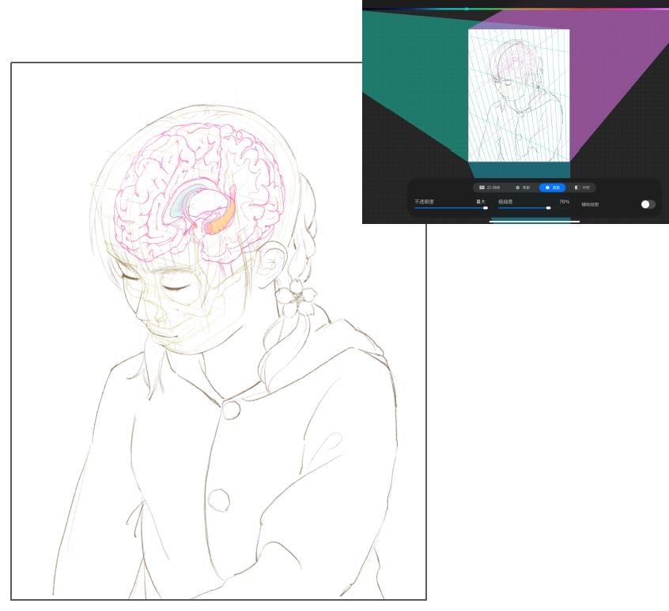
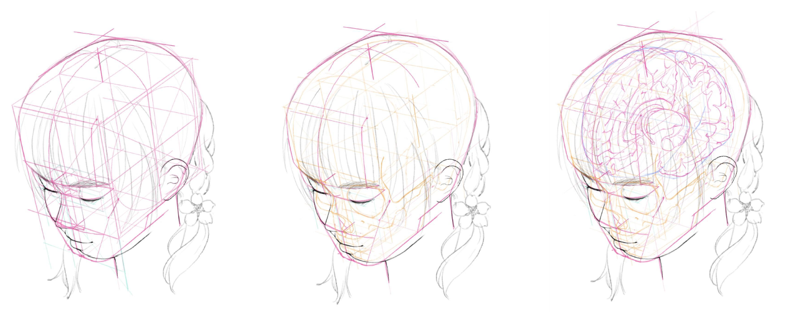
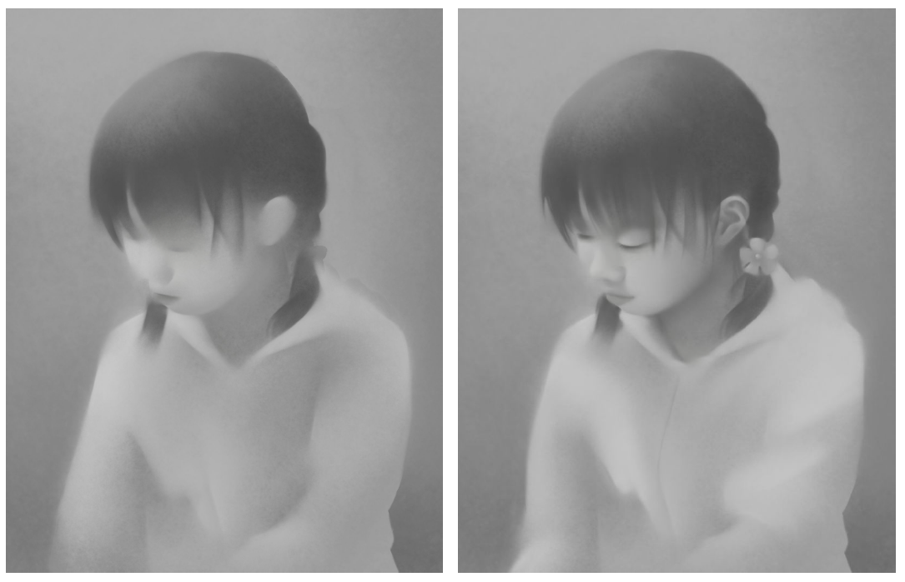
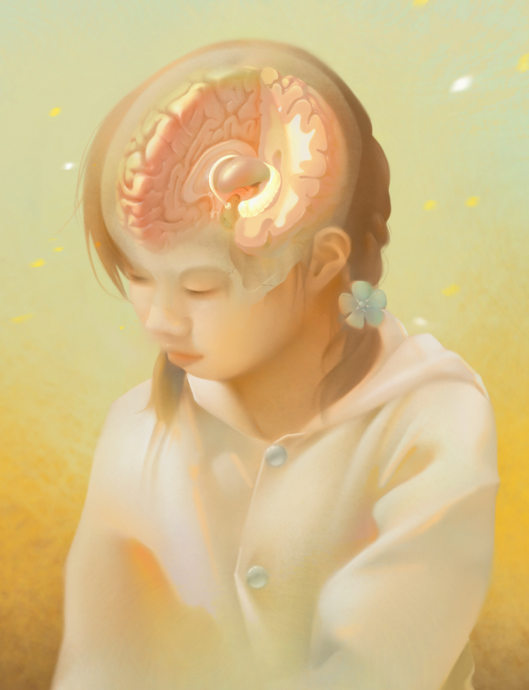

Lab 4 - Scrollytelling
12/February/2026
[Progress] Portrait with Brain in situ




Step 1: Initial Sketch
I started the draft using a perspective guide in Procreate.
Step 2: Refined Sketch
I blocked out forms with boxes and spheres first to ensure accurate proportions and perspectives before refining the anatomical details.
Step 3: Rendering
I’m aiming for the look of an old photograph to capture the feeling of memory.
I started in greyscale first.
Step 4: Final
After finishing the grayscale, I used a Gradient Map in Photoshop to add color, then added further details to the brain and the portrait.
Reflection
Project Summary
For this lab, I developed a Scrollytelling experience, which documents my process of creating an illustration. My goal was to create a narrative flow where the visual elements on the left side of the screen sync with the storytelling text on the right.
Technical Reflection
The most significant challenge was finding a balance between visual aesthetics and performance. I originally intended to use mix-blend-mode: multiply to integrate the images (with white backgrounds) with the webpage background. However, during testing, I noticed that the blend mode caused a noticeable lag whenever a new image was triggered. To prioritize a smooth, uninterrupted user experience, I decided to remove the blend mode and stick with standard image rendering.